Study J01–J04: the complete generic jet mechanics sequence before L01. This chapter then replaces the supplied cavity/source with absorbed laser energy → heat transport → finite phase change → nonlinear bubble motion → identified jet/load → transfer. The full textbook library and your accepted records are retained; new chapters await your brief synthesis.
在 L01 之前学习J01—J04：完整通用射流力学顺序。本章随后将给定腔体／源替换为吸收激光能量 → 传热 → 有限相变 → 非线性气泡运动 → 已识别射流／载荷 → 转印。完整教材库及已接受记录保留；新章等待您的简短综合回答。
Use recovered PFH/PFP material cards from earlier published studies for named controls and property sensitivity. Target formulation and high-state extrapolation remain separate checks.
使用此前已发表研究中恢复的 PFH／PFP 物性卡开展具名对照及物性敏感性分析。目标配方与高状态外推仍须另行核查。
1 · Three published starting points
1 · 三个已发表的起点
Schoppink et al. compare surface absorption by a gold film with volumetric dye absorption in a microchannel. Heating precedes a rapid bubble/jet event, and heat lost into the channel walls changes efficiency. This motivates checking absorption location and heating delay before adopting instantaneous bubble initialization. Schoppink et al. (2024)
Schoppink 等在微通道中比较金膜表面吸收与染料体积吸收。加热先于快速气泡／射流事件，通道壁的散热改变效率。因此，在采用瞬时气泡初始化之前，应核查吸收位置与加热延迟。Schoppink 等（2024）
Wei et al. demonstrate optical activation of PFH droplets with clustered interfacial gold particles. Their resolved micron-scale bubbles arise from aggregates; those observations do not establish the pressure or jet speed of one isolated nanodroplet. Absorber placement and aggregation belong in the model. Wei et al. (2014)
Wei 等展示了界面聚集金颗粒的 PFH 液滴光学激活。所解析的微米级气泡来自团聚体；这些观测不能确立孤立纳米液滴的压力或射流速度。吸收体位置及团聚应进入模型。Wei 等（2014）
Li et al. demonstrate laser-driven transfer using a hydrogel composite stamp and a water-vapor cavity. This supports a compliant cavity-driven transfer branch. It does not establish that PFC embedded in hydrogel creates or stabilizes a liquid jet. Li et al. (2024)
Li 等展示水凝胶复合印章中水蒸气腔驱动的激光转印。这支持柔顺腔体驱动转印分支，但未证明水凝胶嵌入 PFC 会产生或稳定液体射流。Li 等（2024）
2 · Start with the absorbed energy and heated volume
2 · 从吸收能量与受热体积开始
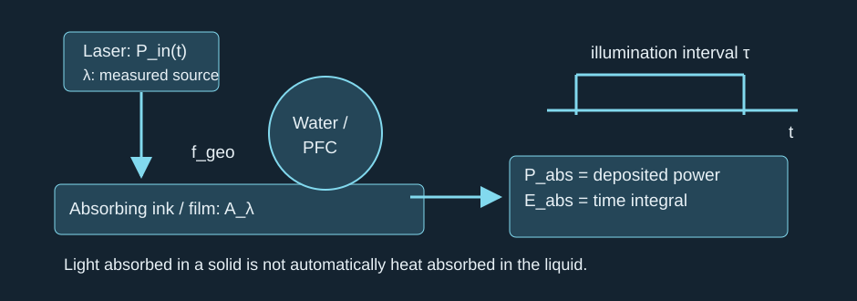
Optical output, interception, absorptance and deposition interval occupy different parts of the path.
光学输出、截获比例、吸收率与沉积时段分别位于链条不同环节。
The geometric interception fraction and absorptance multiply the calibrated source output. With a solid absorber, conduction must then determine how much deposited energy reaches water or PFC. Do not identify optical output, absorbed solid heat, phase-preparation heat and bubble mechanical energy with one another. Schoppink et al. (2024)
几何截获比例与吸收率共同乘以标定的光源输出。采用固体吸收体时，还须通过热传导确定多少沉积能量进入水或 PFC。光学输出、固体吸收热、相变准备热及气泡机械能不能混为一谈。Schoppink 等（2024）
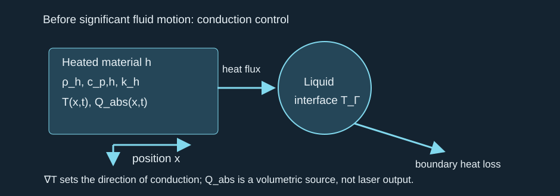
The temperature field is solved inside the absorbing/heated material, with heat fluxes at its boundaries.
温度场在吸收或受热材料内部求解，边界处具有热通量。
This is a conduction reference before appreciable fluid motion. Once flow transports heat, retain fluid advection; once vapor appears, couple the interface heat and mass transfer. A temperature maximum alone neither predicts a nucleation probability nor gives bubble pressure. CW heating can accumulate superheat before a rapid event. Wang et al. (2018)
这是明显流动出现前的热传导参照。流动开始输运热量后，应保留流体对流；蒸气出现后，应耦合界面传热与传质。仅有最高温度既不能预测成核概率，也不能给出泡内压力。连续激光加热可以先累积过热，再产生快速事件。Wang 等（2018）

Thermal penetration is compared with the chosen heated-region size, not assumed from laser spot size alone.
热穿透尺度应与选定受热区域尺寸比较，不能只根据激光光斑尺寸认定。
The diffusion estimate has an order-one coefficient that depends on the geometry and definition of penetration depth. A Fourier number near unity says diffusion across the stated size matters during illumination; it does not guarantee a uniform temperature. Separate the heating interval from the much shorter expansion or collapse interval.
扩散估计的数量级系数依赖几何及穿透深度定义。Fourier 数接近一，表示在照射期间跨越所给尺寸的扩散不可忽略；这不保证温度均匀。应区分加热时段与短得多的膨胀或塌缩时段。
3 · Finite phase inventory closes the thermal problem
3 · 有限相存量使热学问题闭合
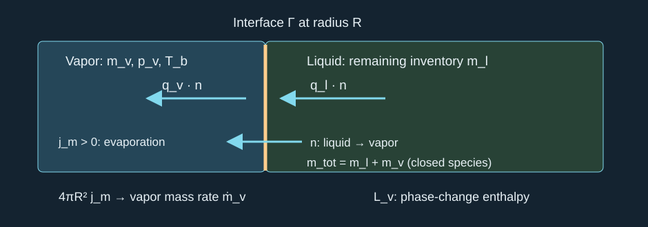
The normal points from liquid into vapor; positive mass flux means evaporation into the bubble.
法向从液体指向蒸气；正质量通量表示蒸发进入气泡。
The Stefan balance neglects interface storage and kinetic-energy corrections. Heat-flux vectors are defined by conduction; the difference supplies latent heat. The vapor mass cannot exceed the available liquid inventory. A finite-rate condensation law or an equilibrium approximation must be selected and tested. The inventory equation assumes a closed single-species droplet, with no leakage or chemical change. Full spherical transfer area also assumes that species contacts the whole surface; dispersed water/PFC needs actual contact areas and transport paths. Vented cases must track escaped or dissolved species and carried enthalpy. Doinikov et al. (2014)
Stefan 平衡忽略界面储能及动能修正。热通量向量由热传导定义；其差额供给潜热。蒸气质量不能超过可用液体存量。必须选择并核验有限速率凝结律或平衡近似。存量方程假设单组分液滴封闭，没有泄漏或化学变化。完整球形传质面积还假定该组分接触整个表面；分散水／PFC 体系需要实际接触面积及输运路径。排气情形须追踪逸出或溶解组分及所携带焓。Doinikov 等（2014）
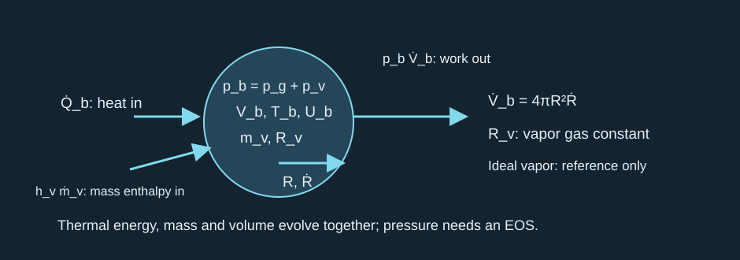
Heat, vapor enthalpy, volume work and the bubble state enter one open-system balance.
热、蒸气焓、体积功及泡内状态进入同一个开放体系平衡。
This uniform bubble reference allows one vapor species to cross the interface and holds noncondensable gas inventory fixed. Heat input excludes the enthalpy already carried by that mass flux. The ideal-vapor equation is an initial control, not a high-pressure PFC EOS. A water/PFC mixture requires species-specific masses and thermodynamic closures. Saturation pressure is an equilibrium relation at interface temperature; rapid collapse can outrun condensation. Akhatov et al. (2001)
这一均匀气泡参照允许一种蒸气跨越界面，且不凝性气体存量固定。输入热量不含该质量通量已携带的焓。理想蒸气关系只是初始对照，不是高压 PFC 状态方程。水与 PFC 混合物需要分别记录组分质量及热力学闭合。饱和压力是界面温度下的平衡关系；快速塌缩可能快于凝结。Akhatov 等（2001）
Optical PFC activation must identify the absorber and its location. PFH with interfacial gold and PFP with loaded optical absorbers are formulation-specific evidence. Laser-generated acoustic transients may participate even when no external ultrasound is imposed; compare thermal and stress-confinement times rather than discarding that possibility. Wei 2014; Strohm 2011
PFC 光学激活必须明确吸收体及其位置。界面含金的 PFH 与负载光学吸收体的 PFP 属于特定配方证据。即使没有外加超声，激光产生的声学瞬态仍可能参与；应比较热约束与应力约束时间，而不是排除这种可能。Wei 2014；Strohm 2011
4 · Thermal closure feeds nonlinear dynamics
4 · 热学闭合进入非线性动力学
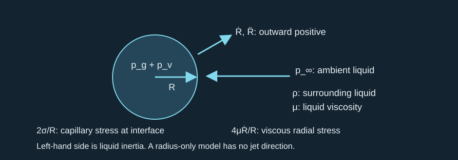
Internal pressure and interfacial stresses drive surrounding-liquid inertia.
泡内压力及界面应力驱动周围液体惯性。
Rayleigh–Plesset is a spherical incompressible reference. Here vapor pressure comes from the thermal/phase model; it is not automatically a constant. This first radial control neglects evaporation-induced velocity slip; the spatial phase-flow model must conserve mass across the moving interface. This radial equation can test growth and rebound but cannot determine a directed jet. Compressibility and a suitable EOS are needed when pressure waves and rapid collapse are the requested outputs. Liang et al. (2022)
Rayleigh–Plesset 是球形不可压缩参照。此处蒸气压来自热学与相变模型，不会自动成为常数。初始径向对照忽略蒸发造成的速度差；空间相变流模型须在移动界面上保持质量守恒。径向方程可核验生长与回弹，却不能确定有方向的射流。若所求输出为压力波与快速塌缩，就需要可压缩性及适当状态方程。Liang 等（2022）
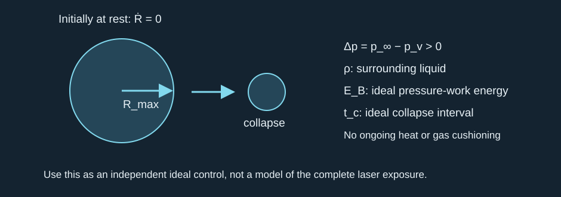
An empty-cavity pressure-work control starts at maximum radius from rest.
空腔压力功对照从最大半径处的静止状态开始。
The ideal control neglects gas, capillary/viscous stresses, finite-drop boundaries and ongoing heating. It supplies an independent scale and numerical benchmark. Liang et al. explicitly restrict their impulsive initiation to thermally confined deposition; longer irradiation requires heat and mass transfer. Retaining a short radial control is useful, but it cannot replace the laser-to-phase calculation.
理想对照忽略气体、毛细与黏性应力、有限液滴边界及持续加热，提供独立尺度与数值基准。Liang 等明确将其脉冲初始化限制在热约束沉积条件；较长照射必须加入传热与传质。简短径向对照具有价值，却不能替代激光至相变计算。
5 · Identify the jet before selecting a jet model
5 · 先识别射流，再选择射流模型
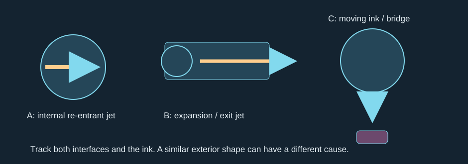
Internal collapse jet, expansion-driven exit jet and a liquid bridge with moving ink are distinct geometries.
内部塌缩射流、膨胀驱动出口射流及连接运动墨片的液桥是不同几何。
A re-entrant jet crosses the bubble interior; an ejected jet exits an outer surface or channel. In a finite droplet, outer-interface acceleration and instability can create filaments. In a capillary, pressure impulse and meniscus focusing can make a fast exit jet. A stretched bridge may also follow solid motion. An exterior image alone does not choose among these mechanisms. Supponen 2016; Zeng 2018; Peters 2013
回入射流穿越气泡内部；喷出射流离开外部表面或通道。有限液滴中，外界面加速度及失稳可以产生细丝；毛细管中，压力冲量与弯月面聚焦可以形成快速出口射流；拉伸液桥也可能跟随固体运动。仅凭外部图像无法在这些机制中作出选择。Supponen 2016；Zeng 2018；Peters 2013
Model refinements must change a stated prediction. Potential flow/boundary integration tests inertial interface focusing before impact; two-phase flow adds viscosity, wetting and topology change; 3D resolves isolated off-axis filaments; compressible multiphase flow adds pressure-wave propagation and impact. Each stage still needs the independently checked thermal source and phase closure. Converged shape is not proof of converged maximum speed or pressure. Lechner et al. (2020)
每一步模型细化都应改变明确的预测。势流与边界积分检验冲击前的惯性界面聚焦；两相流加入黏度、润湿及拓扑变化；三维解析独立的偏轴细丝；可压缩多相流加入压力波传播与冲击。每一步仍需要独立核验的热源及相变闭合。形状收敛不能证明最大速度或压力收敛。Lechner 等（2020）
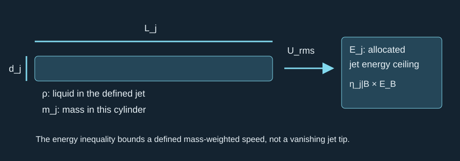
A defined jet mass and allocated energy give a conditional mass-weighted speed ceiling.
指定射流质量及分配能量给出有条件的质量加权速度上限。
The cylinder is a plug-flow mass estimate; the energy inequality also applies to a nonuniform jet when speed means its mass-weighted RMS value. The allocation fraction is an assumed ceiling in this exercise, not a measured efficiency. Additional heating, elastic release or thermal energy converted later must be included if they supply more energy. The inequality cannot bound a jet tip whose tracked mass tends to zero.
圆柱体是塞流质量估计；若速度指质量加权均方根值，能量不等式也适用于非均匀射流。本题的能量分配比例是设定的上限，不是测得效率。如果后续加热、弹性能释放或较晚转换的热能供给更多能量，必须将其计入。该不等式无法限制所跟踪质量趋零的射流尖端。

A moving jet and its receiver define dynamic and early acoustic pressure scales.
运动射流及接收体决定动压尺度与早期声学压力尺度。
Dynamic pressure is not an impact-pressure maximum. Here the water-hammer value is a pressure increment above the initial liquid pressure; it assumes rapid normal arrest against a rigid reference and a linear acoustic approximation. A moving or compliant receiver changes impedance matching. The Mach number here describes jet speed, not radial wall speed. An actual collapse shock is another event. Fix pressure location, area and time resolution before maximizing it; fix jet diameter and tracking interval before comparing velocities.
动压不是冲击压力最大值。此处水锤值表示相对初始液体压力的增量，假定相对刚性参照发生快速法向停止，并采用线性声学近似。运动或柔顺接收体会改变声阻抗匹配。此处马赫数描述射流速度，而非径向泡壁速度。实际塌缩激波属于另一个事件。最大化压力前应固定测点、面积及时间分辨率；比较速度前应固定射流直径与跟踪时段。
6 · Compare the three architectures
6 · 比较三种结构
Droplet-stamp branch: the outer free surface, wetting and bridge geometry determine exterior ejection and release. PFC dispersed in the carrier is a distinct formulation to test. A water-only control at the same geometry and absorbed energy tests its additional role.
液滴印章分支：外部自由表面、润湿及液桥几何决定外部喷出与释放。载液中分散 PFC 是需要检验的独立配方。同几何、同吸收能量的纯水对照可检验其额外作用。
Primary liquid-layer concept: confinement changes liquid inertia, vapor growth and transmitted stress. If intact PVC separates the liquid from the ink, direct jet impact on ink is unavailable along that path; compare cavity pressure, jet loading on PVC and resulting membrane/film traction. Fix layer order and the release interface before assigning a mechanism.
主要液层概念：约束改变液体惯性、蒸气生长及传递应力。如果完整 PVC 隔开液体与墨片，该路径就不存在射流直接冲击墨片；应比较腔内压力、射流对 PVC 的加载及由此产生的膜结构／薄膜牵引。在指定机制前，先确定层序与释放界面。
Required hydrogel exploration: embedded PFC must be assessed for absorber access, heat diffusion, phase inventory and gel deformation. A vapor cavity in a hydrated solid does not automatically have a free liquid path for an ejected jet. Test pressure-driven stamp deformation, any actual solvent/jet channel and damage separately. Increased stiffness or damping can suppress ejection as well as alter its repeatability.
要求的水凝胶探索：嵌入的 PFC 应核查吸收体可达性、热扩散、相存量及凝胶变形。含水固体中的蒸气腔不会自动具有供喷出射流流动的自由液体路径。应分别检验压力驱动印章变形、实际溶剂／射流通道与损伤。刚度或阻尼增加既可能抑制喷出，也可能改变重复性。
For comparison across architectures, report absorbed energy, PFC inventory, heated volume, vaporized fraction, jet mass/velocity, impulse reaching the release interface and intact-transfer outcome. Use within-architecture matched controls; keep geometric differences explicit. An identical optical output is not a fair thermal comparison when absorption and substrate losses differ.
跨结构比较应报告吸收能量、PFC 存量、受热体积、汽化比例、射流质量与速度、到达释放界面的冲量及完整转印结果。在每种结构内部设置匹配对照，并明确几何差异。吸收及基底损耗不同时，同样光学输出并不是公平热学比较。
Keep direct liquid-to-film and liquid → PVC → film as two primary-layer variants. Preserve expansion, collapse jetting, exterior focusing, shock loading and distributed cavity deformation as competing or coexisting mechanisms. The exploration map connects multiple source/phase/flow possibilities to experiments; it does not ask you to eliminate branches or choose only one PFC benefit.
将液体直接加载薄膜及液体 → PVC → 薄膜保留为主要液层的两种变体。将膨胀、塌缩射流、外部聚焦、激波加载及分布腔体变形保留为竞争或共存机制。探索图将多种热源／相变／流动可能性联系到实验，不要求消除分支或只选择一种 PFC 优点。
7 · One integrated calculation
7 · 一道综合计算
Illustrative water control only, with no project calibration: source power 0.10 W for 20 ms, interception fraction 0.50 and absorptance 0.60. Heated water: density 1000 kg/m³, heat capacity 4200 J/(kg·K), conductivity 0.60 W/(m·K), characteristic size 50 µm. Prescribed preparation heats 1.0 µg by 80 K and vaporizes 10 ng with latent enthalpy 2.26 MJ/kg. A separate post-heating empty-cavity control is assigned pressure-work energy 6.0 µJ and driving pressure 100 kPa. At most 10% of that control energy may enter a 20-µm-diameter, 100-µm-long liquid jet. Sound speed for the final comparison is 1500 m/s. These allocations are inputs, not predictions of vapor nucleation or conversion efficiency.
仅为水的教学对照，不是项目标定：光源功率 0.10 W，持续 20 ms；截获比例 0.50，吸收率 0.60。受热水的密度为 1000 kg/m³，比热容 4200 J/(kg·K)，导热率 0.60 W/(m·K)，特征尺寸 50 µm。设定相变准备过程将 1.0 µg 水升温 80 K，并以 2.26 MJ/kg 潜焓汽化 10 ng。另一个加热结束后的空腔对照被指定具有 6.0 µJ 压力功能量及 100 kPa 驱动压差；其中至多 10% 进入直径 20 µm、长 100 µm 的液体射流。末项比较采用声速 1500 m/s。这些分配属于输入，不是蒸气成核或转换效率的预测。
1. Calculate absorbed power, absorbed energy, thermal penetration and Fourier number. Does diffusion guarantee uniform temperature?
1. 计算吸收功率、吸收能量、热穿透尺度及 Fourier 数。扩散能否保证温度均匀？
Reference answer / 参考答案

The absorbed energy begins with interception and absorptance.
吸收能量的计算从截获比例与吸收率开始。
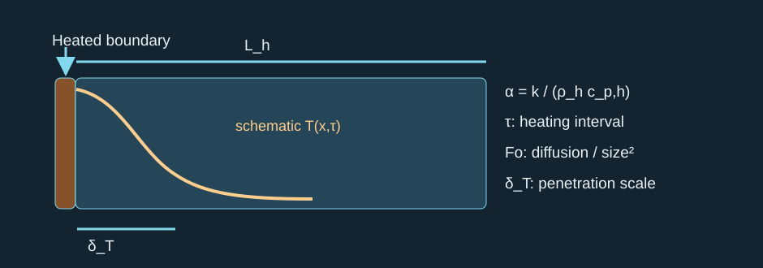
The heated length and illumination duration set the diffusion comparison.
受热长度与照射时长决定扩散比较。
P_abs = 0.030 W; E_abs = 0.600 mJ. α = 1.42857e-07 m²/s; δ_T ≈ 53.45 µm; Fo = 1.1429. Diffusion across 50 µm matters, but the source and boundary conditions can maintain temperature gradients.
P_abs = 0.030 W；E_abs = 0.600 mJ。α = 1.42857e-07 m²/s；δ_T ≈ 53.45 µm；Fo = 1.1429。跨越 50 µm 的扩散不可忽略，但热源与边界条件仍可能维持温度梯度。
2. Estimate the prescribed phase-preparation heat. Does having enough energy establish that a bubble nucleates, or identify the remaining jet energy?
2. 估计所设相变准备热。能量充足是否意味着气泡必然成核，或能确定剩余射流能量？
Reference answer / 参考答案
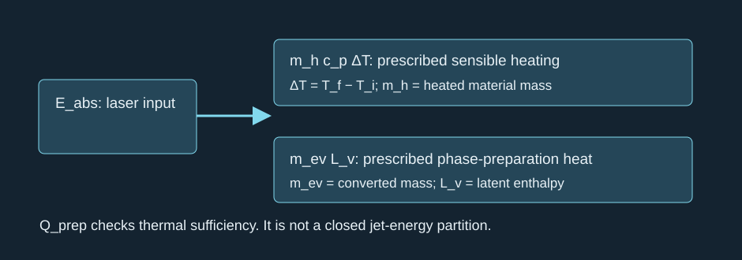
Sensible heating and latent enthalpy are a preparation diagnostic, not a full mechanical balance.
显热与潜焓属于准备过程诊断，不是完整力学平衡。
Q_sensible = 336 µJ; Q_phase = 22.6 µJ; Q_prep ≈ 358.6 µJ, below 600 µJ. This only passes a loss-free thermal sufficiency estimate. Nucleation kinetics, losses and heat localization are still unknown. The 241.4 µJ arithmetic remainder is not a predicted jet energy: this enthalpy estimate is not a closed transient energy partition, and stored heat can later participate in phase change or work.
显热为 336 µJ，相变热为 22.6 µJ，准备热约 358.6 µJ，低于 600 µJ。这仅通过无损耗的热量充足性估计；成核动力学、损耗与热局域化仍未知。算术余量 241.4 µJ 不是预测的射流能量：该焓估计不是闭合瞬态能量分配，储存的热量以后还可能参与相变或做功。
3. For the separate empty-cavity control, calculate maximum radius and collapse time. Can its entire 20 ms heating history be replaced by instantaneous deposition?
3. 对独立空腔对照，计算最大半径与塌缩时间。能否将整个 20 ms 加热历程替换为瞬时沉积？
Reference answer / 参考答案

A separate control has a specified bubble energy, not the source optical energy.
独立对照具有指定气泡能量，而非光源光学能量。
R_max = [3E_B/(4πΔp)]^(1/3) = 242.86 µm. t_c ≈ 22.22 µs. The heating interval is about 900 such collapse intervals. This comparison rejects an unexamined instantaneous-source replacement for the full exposure; it does not by itself exclude an individual fast bubble event after a heating delay.
R_max = [3E_B/(4πΔp)]^(1/3) = 242.86 µm。t_c ≈ 22.22 µs。加热时段约为该塌缩时段的 900 倍。这一比较否定了未经核验便把完整照射替换为瞬时热源的做法；它本身不排除加热延迟后发生单次快速气泡事件。
4. Calculate the specified jet-mass estimate and conditional RMS speed ceiling. Is it an achieved jet-tip velocity?
4. 计算指定射流质量估计与有条件均方根速度上限。它是否为已实现尖端速度？
Reference answer / 参考答案

The allocated energy and nonzero jet mass must both be specified.
必须同时指定分配能量及非零射流质量。
m_j = 3.14159e-11 kg = 31.42 ng; E_j = 0.60 µJ; U_rms ≤ 195.44 m/s. This is an energy ceiling under the declared allocation and no extra energy input. It does not establish launch, shape, direction, actual conversion efficiency or a maximum tip speed.
m_j = 3.14159e-11 kg = 31.42 ng；E_j = 0.60 µJ；U_rms ≤ 195.44 m/s。这是所声明分配及无额外能量输入条件下的能量上限，不能确立发射、形状、方向、实际转换效率或尖端最大速度。
5. If a uniform jet hypothetically reached that speed, compare dynamic pressure, the rigid-arrest linear acoustic scale and Mach number. What would be needed to claim an actual transfer pressure?
5. 如果均匀射流假设性地达到该速度，比较动压、刚性停止的线性声学尺度与马赫数。声称实际转印压力还需要什么？
Reference answer / 参考答案
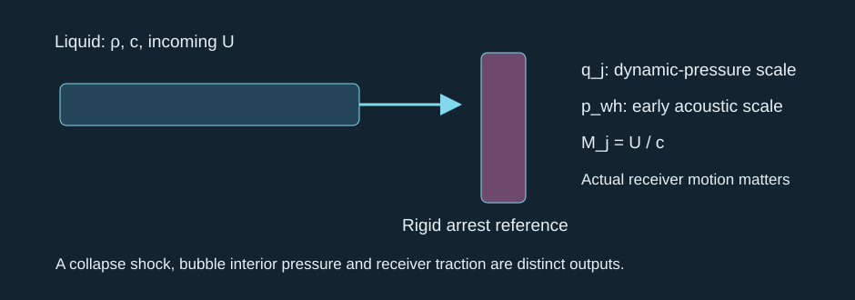
The incoming speed is a hypothetical control, and the arrest boundary determines the pressure scale.
输入速度为假设对照，停止边界决定压力尺度。
q_j ≈ 19.10 MPa; p_wh ≈ 293.16 MPa; M_j ≈ 0.1303. These are different conditional scales. At this Mach number the linear estimate needs a nonlinear/compressibility check. Establish measured jet motion, actual impact geometry, receiver impedance/motion and a pressure area/time definition, and separate collapse shock from jet loading. Neither number is a verified project maximum.
q_j ≈ 19.10 MPa；p_wh ≈ 293.16 MPa；M_j ≈ 0.1303。它们是不同的有条件尺度。在此马赫数下，线性估计需要非线性与可压缩性核查。应确立实测射流运动、实际冲击几何、接收体声阻抗与运动，以及压力面积／时窗定义，并区分塌缩激波与射流加载。两者均不是已核验的项目最大值。
Brief synthesis after self-check: explain the missing links between laser output, vapor mass and a measured transfer-jet load. Include one observation that would distinguish a release-driving jet from a bridge stretched after release. No new mastery is recorded until you respond.
自行核对后的简短综合：说明光源输出、蒸气质量与实测转印射流载荷之间缺少哪些环节，并给出一项可区分驱动释放的射流与释放后拉伸液桥的观测。作答前不新增掌握记录。
8 · Continue toward the project predictions
8 · 继续推进项目预测
Use the comparison and experiment map to preserve three architectures, both film/PVC force paths and multiple potential PFC benefits. The next study units deepen phase closure, resolved jet formation and load transmission, then compare one bubble, 3–5 bubbles and finite arrays at fixed total energy.
使用比较与实验图保留三种结构、膜／PVC 的两条受力路径及 PFC 多种潜在优点。后续学习单元深入相变闭合、解析射流形成及载荷传递，再在固定总能量下比较单泡、三至五泡与有限阵列。
The future Modeler must build and solve fresh COMSOL theory checks, verify conservation and refinement, then teach the construction process through teach-mattcc and guide an independent rebuild. Harmonic response is a supporting control when it tests an identified loss or interaction; it is not a prerequisite detour for this route.
未来建模智能体必须从零创建并求解 COMSOL 理论核验，检查守恒与细化收敛，然后用 teach-mattcc 教授建模过程并指导独立重建。简谐响应在检验特定损耗或相互作用时可作辅助对照，不是本路线的先修绕行。